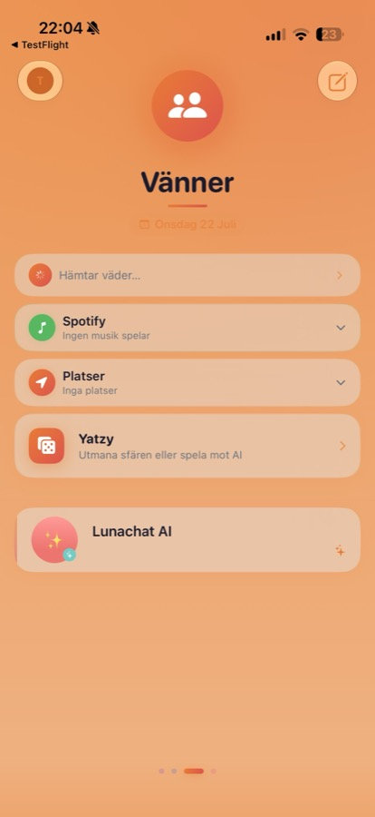

Utvalda system
Femton system, en byggare.
Från självhostad AI-infrastruktur och grundforskning i AI, till premiumdesignade iOS-appar, spel och röstdrivna agenter. Byggda från idé till fungerande produkt, av en person.
01 · Agent-plattform
Driftar dygnet runt
Hermes
En självhostad AI-agentplattform som kör på min egen server, Titan. Hermes tänker med en blandning av en lokal modell (Ornith-35B) och molnmodeller, minns via en egen minnesbank, researchar den öppna webben genom en privat sökmotor och når mig direkt över iMessage. Under huven: systemd-tjänster, autonoma bakgrundsagenter och en tydlig gräns mellan vad AI:n får göra själv och vad som kräver mitt godkännande.
PythonAgent-arkitekturSelf-hosted LLMSystemdrift
02 · Grundforskning
388 källor, pågående
Ai-research
Ett långkörande, källbelagt forskningsspår i att bygga resurseffektiv AI helt från grunden — för att kunna köra lokalt på en iPhone med ~6 GB RAM. Medvetet utan att luta sig på en färdig basmodell, och utan att anta att Transformer-arkitekturen är given. Formell forskningsdrift med logg, källindex, dokumenterade misslyckanden och riktiga experiment — senaste körningen (Run 42) testade allt från hybrid SSM+attention-arkitekturer till spekulativ avkodning för mobil inferens.
PythonOn-device AIGrundforskning
03 · Röstassistent
Aktiv utveckling
Navi
En AI-assistent-app för iOS med egen serverdel — jag pratar med Navi via röst eller text, och den kan i sin tur starta autonoma "workers" som kodar, deployar och researchar på servern medan jag gör annat helt. Express/WebSocket-server med en LLM-orchestrator, persistent RAG-indexerat minne, push-notiser och en ChatGPT-lik SwiftUI-app med Live Activity-stöd.
SwiftUINode.jsRöstagentAutonoma workers
04 · AI-app
Aktiv utveckling
Ikarus
En fullskalig AI-app med chatt mot flera modeller via OpenRouter, ett eget kodverktyg med fem distinkta agenter kopplade mot GitHub, ett AI-genererat nyhetsflöde och ett komplett röstläge (ElevenLabs för tal, Gemini för taligenkänning). En egen "intelligenslagr" klassificerar varje förfrågan och dirigerar den till rätt modell — molnbaserad eller på-enheten.
SwiftUIMulti-agentRöst & talOn-device AI
05 · Visualisering
Aktiv utveckling
agentic-os / NEXA//OS
Ett realtids-WebGL-kommandocenter för min egen agent- och serverinfrastruktur. En partikelsfär med tusentals punkter reagerar live på verklig telemetri — färg, puls och glöd driven av faktisk aktivitet från Hermes, inte platshållardata. Byggt med Three.js, bloom/vignette-efterbehandling och ett omgivande sci-fi-HUD.
TypeScriptWebGL / Three.jsLive telemetri
06 · Messenger
Aktiv utveckling
Lunachat
Ett meddelandeapp som tänker om vad en chatt kan vara — livet organiserat i swipebara, färgtemade "sfärer" (Privat, Jobb, Vänner, Familj), var och en med sin egen gradient och rörelse. Två AI-kontakter, Luna och Max, är vävda in bland vanliga samtal, var och en med en egen röst. Byggd i Swift 6 med strikt concurrency, ett fullständigt designtoken-system och egna bubblor, reaktioner och chattbakgrunder.
Swift 6SwiftUIDesign systemAI companions

Sfären Vänner
07 · Spel
Aktiv utveckling
Corefall
Ett realtidsstrategispel byggt från grunden för iOS. Enheter, resurser och relationer bildar en konsekvent värld; målet är inte bara att vinna utan att skapa en plats med minne. Touch-först RTS-UX, egen simuleringsmotor.
SwiftRealtidssimuleringWorld design
08 · Livshanteringsspel
Shippad
Lifetoken
Ett dystopiskt iOS-spel där din livsbalans mäts i sekunder — du föds med 86 400 och dör vid noll. Tid vinns genom hälsoaktivitet (HealthKit), tidslåsta jobb, färdighetsbaserade minispel, ett fullt kasinosviter (Crash, Blackjack, Poker, Roulette, en Yatzy-AI-motståndare med ~82% vinstfrekvens) och tidslåsta investeringar med ränta-på-ränta. Ett zonsystem med 14 livszoner och hysteresbaserad migration styr skatt och multiplikatorer under huven.
SwiftHealthKitSpelekonomiSimulering
09 · AI-assistent
Produktion
OrnithAI
Den mobila fronten för Ornith — en produktionsklar iOS-assistentapp med proaktiv hjälp och djup iOS-integration. Byggd för att förutse nästa steg snarare än att bara svara på frågor.
SwiftiOSProaktiv AI
10 · Kontrollpanel
TestFlight
Titan iOS
En SwiftUI-companion till min egen server — ett riktigt operatörscockpit för en privat AI-backend, med en egen Flask-API-backend på servern. Realtidsdashboard med primär/backup-anslutning, drifttid, live CPU/RAM/disk-mätning, OpenRouter-kostnadsspårning, en Hermes-statuskort och en fullskärms-inspektor för att följa och skicka kommandon till pågående AI-sessioner live. Push-notiser och flera konfigurerbara endpoints med bearer-auth.
SwiftUIFlaskDevOpsLive sessions
MindfulTogether
En community-app för personer med psykisk ohälsa — forum kategoriserade efter ångest, depression, stress, utbrändhet och relationer, en kunskapsbank sammanfattad från trådarna, och en daglig mående-check. Anonym som standard, hög kontrast och stort typsnitt som medveten tillgänglighetsprincip, inte eftertanke.
SwiftCommunityTillgänglighet
Lunaflix
En komplett streaming-app i Netflix/Apple TV+-klass, med ett mörkt lila/cyan tema, glasmorfism-kort, en auto-roterande hero-karusell och matchad-geometri-övergångar mellan vyer. Rader för toppinnehåll, fortsätt titta och nedladdningar med lagringsindikatorer.
SwiftUIGlassmorphismMedia UX
Lumvra
En AI-driven sömncoach för iOS — ett fokuserat, polerat exempel på tillämpad AI i en tight, konsumentnära vertikal.
SwiftAI coachingWellness
14 · Föräldraskap
Shippad
BabyCare
En komplett föräldraapp som spänner över graviditetsspårning, tillväxtkurvor och mat-/sömnloggar. SwiftUI + SwiftData helt on-device, utan tredjepartsberoenden — ett bevis på att kunna designa datarika, privata konsumentappar från idé till klar produkt.
SwiftSwiftDataData-rik UX
Eon-Y
Ett långkörande forskningsspår i autonom kognition på-enheten, nu i sin senaste iteration efter Eon-Y-V5 (Qwen3-integration, autonom webbläsare, full kognitiv arkitektur som kombinerar flera medvetandeteorier). Ett långsamt spår om minne, initiativ och vad autonomi faktiskt kräver.
SwiftOn-device AICognition
Idé, arkitektur, gränssnitt, drift — samma person
Det som binder samman de här systemen är inte teknikvalet — det växlar mellan Swift, Python och TypeScript beroende på vad uppgiften kräver. Det som binder dem samman är att jag går hela vägen: från första skiss till ett system som faktiskt körs, underhålls och förbättras. Ingen prototyp som stannar i Figma, ingen backend någon annan får ta hand om.
Det gäller lika mycket ett spels simuleringsmotor som en agents skyddsräcken, en forskningslogg med 388 källor som en röstpipeline. Bygg det, testa det på riktigt, och lita inte på att det fungerar förrän du sett det köra.
Vill du se ett live-exempel?